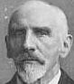
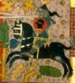
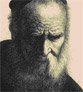

|
Buitengewone aanwinsten van Bijzondere collecties
2006-2007
20 juni t/m 4 juli 2007
Een selectie van
buitengewone aanwinsten van de afdeling Bijzondere Collecties. De te
bezichtigen stukken zijn in de periode 2006-2007 verkregen dankzij
schenking uit privéverzamelingen en aankoop met behulp van
fondsenwerving.
Christiaan Snouck Hurgronje 1857-
2007
Van 11 januari t/m 2 april
2007
Tentoonstelling ter gelegenheid van de 150ste geboortedag op
8 februari van de arabist, islamoloog en rector van de Universiteit
Leiden, Christiaan Snouck Hurgronje.
Nederland-Duitsland. Und kein Ende. 50 jaar opleiding
Duits in Leiden
Van 30 november t/m 31 december
2006
Tentoonstelling t.g.v. het 50-jarig bestaan van de opleiding
Duitse taal en cultuur aan de Universiteit Leiden.
Ô
bloem der steden: Bilderdijk en Leiden
 Van 7 september t/m 27 november
2006 Van 7 september t/m 27 november
2006
Tentoonstelling ter herdenking van het 250ste geboortejaar
van Willem Bilderdijk op 7 september 2006
Locatie: UB,
Tielehal
Rembrandt in prent gebracht
Van 1 juni t/m 27 augustus
2006
Deze tentoonstelling concentreert zich op de prenten die
naar Rembrandts schilderijen en tekeningen zijn gemaakt, in de
eerste plaats in Nederland maar ook in andere Europese landen.
Behalve aan de hierboven genoemde kwesties zal ook aandacht besteed
worden aan de verzamelgeschiedenis, de ontwikkeling van de
reproductiegrafiek als zodanig, de mate van getrouwheid in de
weergave en de gebruikte technieken.
Locatie: UB,
Tielehal
Direct
naar een voorproefje van de tentoonstelling
Mini-tentoonstelling "Oud, ouder, oudst"
In
de Tielehal van de UB Leiden is van 21 april t/m 5 juni in een
tweetal vitrines een gevarieerde collectie boeken, prenten,
pamfletten en postzegels te zien over mensen die zeer oud zijn
geworden, of waarvan althans werd beweerd dat zij een extreem hoge
leeftijd bereikten.
Lokatie: UB, Tielehal
Zie ook: http://www.dekunstvanhetoudworden.nl/
Lieveling
van de Latijnse taal: Justus Lipsius te Leiden herdacht bij zijn
vierhonderdste sterfdag
Van 16 maart tot en met 28
mei 2006
Een selectie uit het Musaeum Lipsianum: de nalatenschap
van de Brabantse geleerde Justus Lipsius, die 13 jaar aan de Leidse
universiteit doceerde. De tentoonstelling wordt gehouden ter
gelegenheid van de 400ste sterfdag van Lipsius op 23 maart
2006.
Catalogus: in de reeks Kleine Publicaties van de
Universiteitsbibliotheek Leiden verschijnt een begeleidende
catalogus door Jeanine De Landtsheer e.a. (€
17,50)
Lokatie: UB, Tielehal
Dagelijks
geloof. Vrouwen en religie in de laatmiddeleeuwse
stad
Van 6 tot en met 18 april 2006
Deze kleine
tentoonstelling toont aan de hand van teksten in handschriften en
vroege drukjes uit de Universiteitsbibliotheek Leiden enkele sporen
van die cultuur in de laatmiddeleeuwse literatuur. Er zijn drie
afdelingen: kluizenaressen, vrouwen in de stad en begijnen, met
speciale aandacht voor de begijnen uit Mechelen, vanwege een nieuwe
aankoop van de Universiteitsbibliotheek.
Locatie:
Universiteitsbibliotheek, Tielehal
Kleine tentoonstelling "Poliepen, luizen en de menselijke
ziel. De Leidse uitgever-boekverkoper Elie Luzac
(1721-1796)".
22 december 2005 tot 6 april
2006
Over de Leidse uitgever-boekverkoper Elie Luzac
(1721-1796).
Samenstelling: Rietje van Vliet &
Kasper van Ommen
Lokatie: Universiteitsbibliotheek, Tielehal
Denken
over duivels. Vroegmoderne demonologie in de Leidse
Universiteits-bibliotheek
Van 9 februari tot 11 maart
2006
Het vroegmoderne Europa was gefascineerd door hekserij,
magie, demonen en duiveluitdrijvingen, hetgeen door veel
intellectuelen werd beschreven. De Leidse UB herbergt talrijke
demonologische klassiekers uit deze periode. Een deel van de in
de UB aanwezige boeken over dit onderwerp is
tentoongesteld voorzien van begeleidende teksten voorzien door
dr. Jan Frans van Dijkhuizen.
Lokatie: UB, Tielehal
Tentoonstelling
Hora est! 600.000 dissertaties in de Universiteitbibliotheek
Leiden
Van 8 december 2005 tot 4 februari 2006
In de
UB Leiden zijn meer dan een half miljoen proefschriften aanwezig.
Deze proefschriften komen deels van Nederlandse universiteiten,
deels van vele buitenlandse universiteiten (vooral uit Frankrijk en
Duitsland). Er zijn er honderden bij die meer dan vier eeuwen oud
zijn. Het aantal in Leiden aanwezige proefschriften is zelfs zo
groot, dat pas dit jaar de proefschriften zijn ontdekt van een
twintigtal beroemde Nobelprijswinnaars en wetenschappers, zoals
Albert Einstein, Marie Curie-Sklodowska, Max Weber, Robert
Oppenheimer, Luigi Pirandello, Max Planck en Niels
Bohr.
Samenstelling: Jos Damen en Kasper van
Ommen.
Opening: donderdag 8 december 2005, 16.00
uur.
Publicatie: Hora est! On dissertations (€
10). Te verkrijgen via Kleine Publicaties en bij de receptie van de UB.
Lokatie:
Universiteitsbibliotheek, Tielehal
Kleine tentoonstelling Nobelprijswinnaar Harold
Pinter
Vanaf 17 oktober 2005
Kleine tentoonstelling
gewijd aan de Britse toneelschrijver Harold Pinter, winnaar van de
Nobelprijs voor Literatuur 2005.
Lokatie:
Universiteitsbibliotheek, "Spoetnik"
Tentoonstelling 'Een Ridder van groot oordeel. Montaigne
en Leiden.'
1 september t/m 4 december 2005
Deze
tentoonstelling word gehouden naar aanleiding van het congres
getiteld "Montaigne and the Low Countries / Montaigne et les
Pays-Bas", dat op 1 en 2 september in Leiden rond het leven en werk
Montaigne wordt georganiseerd door o.a. prof. dr. P.J. Smith van de
vakgroep Franse taal en cultuur van de Universiteit
Leiden.
Samenstelling: Dr. A. van der Lem (intern);
Prof.dr. P.J. Smith (extern)
Boekje: KP
70
Opening: donderdag 1 september 2005, 16.00
uur.
Aanleiding: Montaigne congres op 1-2 september
Lokatie:
Universiteitsbibliotheek, Tielehal
Kleine expositie gewijd aan Marten Toonder
(1912-2005)
Van 28 juli t/m 15 september.
Naar aanleiding
van het overlijden van Marten Toonder exposeert de UB een beknopte
selectie boeken van en over Marten Toonder.
Lokatie:
Universiteitsbibliotheek, "Spoetnik"
"Adelaar
in wolken. Josephus Justus Scaliger (1540-1609)"
30
juni t/m 28 augustus 2005
Centraal staan het leven en werk van de
bekende humanist Scaliger, met een nadruk op zijn Leidse
periode.
Lokatie: UB, Tielehal
Catalogus: bij deze
tentoonstelling verschijnt een rijk geïllustreerde catalogus (€ 15,
te koop bij de receptie van de UB).
"Geluck, geneughd, vermaeck en vreught. Muziekboeken in
de Universiteitsbibliotheek Leiden"
3 juni t/m 26 juni
2005
Een representatieve selectie uit de ruim 1800 muziekboeken
die in de UB aanwezig zijn, aangevuld met prenten uit eigen
verzameling. O.a. muziekstukken van Locatelli.
Samenstelling:
Kathryn Cok, Ton Koopman.
Catalogus: bij deze
tentoonstelling verschijnt een rijk geïllustreerde catalogus in de
reeks uitgaven van de faculteit der Kunsten (€ 10).
Sherlockholmesing
14 april - 29 mei
2005
Pastiches op werk en leven van Sir Arthur Conan
Doyle
Samenstelling: August Hans den Boef (extern), Witkam
(intern)
boekje: KP
67
Opening: donderdag 14 april 2005 om 16.00 uur.
Tentoonstelling en catalogus ‘Oostersche
weelde’
24 februari – 10 april 2005
Het Oriëntalisme
in de Europese kunst, vertoond aan de hand van voornamelijk
19de-eeuwse werken uit eigen collectie, aangevuld met enkele
bruiklenen.
Samenstelling: Jef Schaeps Arnoud Vrolijk &
Kasper van Ommen (intern)
Publicatie: Oostersche weelde, een
fraai vormgegeven en rijkgeïllustreerde bundel onder redactie van
Jef Schaeps, Arnoud Vrolijk & Kasper van Ommen, met opstellen
door diverse auteurs, een uitgave van de Primavera Pers in
Leiden.
Aanbieding van het boek: donderdag 10 maart 2005 om 15.30
uur.
Minitentoonstelling Driek van Wissen, Dichter des
Vaderlands 2005-2008
2 februari - 31 maart 2005
Uit
de collectie van de Leidse universiteitsbibliotheek zijn bundels
tentoongesteld die de diverse kanten van Van Wissens dichterschap
weerspiegelen.
Lokatie: Universiteitsbibliotheek,
"Spoetnik"
Samenstelling: Jos Damen (intern)
Handschrift op papyrus
8 januari – 27
februari 2005
De ontwikkeling van Egyptisch en Grieks schrift aan
de hand van papyri en ostraca uit de collectie van het Papyrologisch
Instituut te Leiden.
Naar aanleiding van het 70-jarig bestaan van
het Leids Papyrologisch Instituut op 17 januari 2005.
Opening:
zaterdag 8 januari 2005 om 15.00 uur, Noordhal van de UB
Samenstelling: Francisca A.J. Hoogendijk en Brian P. Muhs
(extern), Jan Just Witkam (intern)
Boekje: KP
65
Between the cross and the crescent
20 januari
– 20 februari 2005
Printed books on Croatia and Dalmatia from the
fifteenth to the twentieth centuries. A selection from the
Dubravc?ic´ Collection.
Samenstelling: Antiquariaat Papyrus
(Voorburg) and Ivan Dubravcic (extern), Jan Just Witkam en Anton van
der Lem (intern)
Boekje: KP
66, by Pietro Masturzo & Rita Colognola
Opening:
donderdag 20 januari 2005 om 16.00 uur
Theo van Gogh
22 november 2004 – 16 januari
2005
Interviews, korte verhalen, filmscripten, fotoboeken,
schotschriften (De gezonde roker, Er gebeurt nooit iets, Allah weet
het beter, Sla ik mijn vrouw wel hard genoeg?, Een prettig
gesprek)
Lokatie: Universiteitsbibliotheek,
"Spoetnik"
Samenstelling: Jos Damen, in samenwerking met de
bibliotheek van het Kunsthistorisch Instituut
De luister van de lauwerkrans
25 november
2004 – 6 januari 2005
Petrarca en de Petrarca-receptie in de
vroegmoderne tijd.
Aanleiding: Petrarca congres in Leiden op 2-3
december 2004
Samenstelling: Wim Gerretsen, Karl Enenkel en
Jan Just Witkam
Boekje: KP
64
Tentoonstelling: West-Arabian Encounters. Fifty years of
Dutch-Arabian relations in images (1885-1935).
21
oktober 2004 - 21 november 2004
Samenstelling: Dirry Oostdam
en Jan Just Witkam
Catalogus: Rijk geïllustreerde catalogus
door Dirry Oostdam met bijdragen van Jan Just Witkam (prijs € 10,00)
> zie Kleine Publicaties
Elfriede Jelinek: Nobelprijs 2004
Vanaf 11 oktober
2004
Lokatie: Universiteitsbibliotheek, "Spoetnik"
Samenstelling: Kasper van Ommen en Jos Damen, naar een idee van
Barbara Tchorzewska
Flankerende
tentoonstelling over Carolus Clusius
24 september – 18
oktober 2004
Van 24-27 september 2004 vindt een internationale
conferentie over Clusius in de UB plaats.
Samenstelling:
Kasper van Ommen
Fraay met sapverwen gecouleurd. Kunstenaars in Leiden in
de achttiende eeuw.
16 september - 17 oktober
2004
Achttiende-eeuwse Leidse tekeningen uit de rijke collectie
van het Prentenkabinet.
Samenstelling: Jef Schaeps
(Prentenkabinet Leiden) en Alfons Nauw
Catalogus: rijk
geïllustreerde catalogus (prijs € 7,50) > zie Kleine Publicaties
Boekbanden van J.A. Loebèr jr.
23 augustus - 11
oktober
Kleine tentoonstelling rond enkele boekbanden van de
Leidse boekbinder J.A. Loebèr jr. die onlangs met steun van de
Vrienden van de UB zijn aangekocht voor de collectie.
Lokatie:
Universiteitsbibliotheek, zuidhal
Samenstelling: Kasper van
Ommen
Legatum Stolpianum
Alleen te zien geweest op 16
september 2004
Tentoonstelling ter gelegenheid van de publicatie
van CM 38, de inventaris van het LS, en de prijsuitreiking aan J.J.
Fehr en André Bouwman door het bestuur van het LS.
Lokatie:
Universiteitsbibliotheek, noordhal
Samenstelling: A.
Bouwman
Oostende
verloren, Sluis gewonnen, 1604
12 augustus - 12 september
2004
Catalogus en publikatie door Dirk de Vries, met bijdragen
van Charles van den Heuvel, Anton van der Lem, Piet Lombaerde.
Interne medewerking: van Charles van den Heuvel en Anton van der
Lem.
Extern: D. de Vries
Boekje: KP
61
Opening: donderdag 12 augustus 2004, om 16.00 uur
Portretpenningen uit de collectie van het
Prentenkabinet
Lokatie: Universiteitsbibliotheek,
zuidhal
Samenstelling: drs. J. Schaeps (intern)
Arminius en Gomarus (1604-2004)
Lokatie:
Universiteitsbibliotheek, vitrines naast het
Uitleenbureau
Samenstelling: Prof. Dr. T M van Leeuwen &
Prof. Dr. W Verboom (extern), dr. A. van der Lem & J.J. Witkam
(intern)
Vetus testamentum in Lugduno Batavorum
1 juli – 8
augustus 2004
Lokatie: Universiteitsbibliotheek
Deze
tentoonstelling valt samen met het 18e Congres van de International
Organization for the Study of the Old Testament (IOSOT) te Leiden,
1-6 aug. 2004. Vooraf vinden kleine congressen plaats op het gebied
van de Griekse bijbel, de Septuaginta, en de Aramese bijbels, de
targumim.
Samenstelling: Prof. A. van der Kooij, dr. Konrad
Jenner (extern), Robert Kerr (intern)
Boekje: KP
60
Christiaan
Huygens. Facetten van een genie: de manuscripten
8 april
t/m 31 mei 2004
Samenstelling: André Bouwman
Met catalogus
"De alledaagse dingen die onze stemming bepalen"
De
collectie Nieuwe Kunst in de Universiteitsbibliotheek Leiden.
4
Maart tot en met 4 april 2004
Samenstelling: Kasper van
Ommen
Met catalogus (= Kleine Publicaties, 59)
Gerrit
Komrij, zestig jaar
Maart 2004
Samenstelling:
Kasper van Ommen
Flankerende tentoonstelling met vele
bijzondere Komrij-drukken. Tevens verscheen de bibliofiele
publikatie "De Bibliotheekknecht" waarvan de opbrengst ten goede
komt aan het restauratiefonds van de Leidse
Universiteitsbibliotheek.
Lokatie: Universiteitsbibliotheek,
vitrines bij het Uitleenbureau
"Vriendschap voor het leven; Reisimpressies en herinneringen
aan de Leidse Sociëteit Minerva van Alexander Ver
Huell"
Tentoonstelling in de Universiteitsbibliotheek
Leiden
8 Januari tot en met 27 februari
2004.
Samenstelling: Claudine de With, Florentine haverkampen
Nelke Bartelings
Met catalogus (= Kleine Publicaties, 58)
'De
verandering waargenomen. A.E. Cohen als historicus en universitair
bestuurder
28 november 2003 - 4 januari 2004.
Samenstelling: dr. A. van der Lem
Met catalogus: (= Kleine Publicaties, 57).
Wijsheid uit het Westen. De verspreiding van westerse
literatuur in de moderne Arabische wereld
23 oktober - 23
november 2003
Samenstelling: Arnoud Vrolijk
Met
catalogus: (= Kleine Publicaties, 56).
Balkan
in kaart. Vijf eeuwen strijd om identiteit. 4 september
- 16 oktober 2003
Samenstelling: Harrie Teunissen en John
Steegh
Met catalogus: (= Kleine Publicaties, 55).
"Een
onvermoeide arbeid komt alles te boven". De Bibliothecae
mathematica, pedagogica en biographica van David Bierens de
Haan.
3 juli - 3 augustus 2003
Samenstelling: K.
van Ommen m.m.v. H.J.M. Bos
Met catalogus: (= Kleine Publicaties, 54).
Driehonderd jaar Sint-Petersburg
mei - juni
2003
Samenstelling: Jan Paul Hinrichs
Een
zwarte bladzijde uit de geschiedenis van de UB
Leiden
15 april - december 2003
Flankerende
Tentoonstelling
Samenstelling: Jos Damen
Beets
1903 - 2003
13 maart - 11 mei
2003
Samenstelling: C.J. Stiekema en A.Th. Bouwman
Ter
gelegenheid van de honderdste sterfdag van Nicolaas Beets. Met
begeleidende publicatie: A.Th. Bouwman m.m.v. E. Krol, De
Beetscollectie te Leiden. Inventaris van papieren en drukken uit het
bezit van Nicolaas Beets (1814-1903) berustend in de Bibliotheek van
de Maatschappij der Nederlandse Letterkunde (= Codices
manuscripti, 36).
Descartes en Leiden. Vrienden en vijanden, bewonderaars
en bestrijders
30 januari - 9 maart 2003
Samenstelling:
Theo Verbeek, Eric-Jan Bos, Anton van der Lem.
Met catalogus:
(= Kleine Publicaties, 53).
Boudewijn
Büch (1948-2002), Werther in Leiden
26 november - 5
januari 2003
Samenstelling: Jos Damen en Kasper van
Ommen:
Hommage aan de overleden auteur, bibliofiel
en verzamelaar Boudewijn Büch (1948-2002).
Floris V door de edelen vermoord. Beeldvorming sinds
1296
19 december 2002 - 26 januari 2003.
Samenstelling: Wim van Anrooij, m.m.v. W.P. Gerritsen,
e.a.
Met catalogus: (= Kleine Publicaties, 51).
De
Nobelprijs voor H.A. Lorentz en P. Zeeman (1902)
8
oktober – 19 november 2002
Adriaan
Morriën: een klein tribuut
Oktober
2002
Samenstelling: Jos Damen
Mini-tentoonstelling over
de schrijver-criticus Adriaan Morriën. Morriën (geboren in Velsen op
5 juni 1912) overleed op 7 juni 2002 in Amsterdam. Als geen ander
drukte Morriën een stempel op de Nederlandse literatuur van na de
Tweede Wereldoorlog.
‘Si ce n'est pour nous, alors pour nos successeurs'.
Honderdvijftig jaar Bibliothèque Wallonne.
26 september - 3
november 2002
Samenstelling: M. Sluis
Met catalogus: (=
Kleine Publicaties, 49).
De eenhoorn en de geleerden. Het debat over het bestaan van de
eenhoorn van de 16e tot de 19e eeuw.
29 augustus - 22
september 2002
Samenstelling: W.P. Gerritsen
Met
catalogus: (= Kleine Publicaties, 48).
Judaica
in Leiden
21 - 25 juli 2002
An exhibition in
Leiden University Library at the occasion of the Congress of
European Association of Jewish Studies, Amsterdam 21-25 juli
2002.
Samenstelling: A. van der Heide
Met
catalogus.
"Tao Teh King van Lao Tse in het Hollandsch
overgebracht"
13 juni - 16 juli 2002
Samenstelling:
J.P. Gumbert
Tentoonstelling van vertalingen van
de Laozi uit de verzameling van dr. J.P. Gumbert, voormalig
hoogleraar Paleografie in Leiden.
Met catalogus: (= Kleine Publicaties, 47).
Kaarten voor de koopman in Azië
25 april - 9 juni
2002
Samenstelling: D. de Vries
Tentoonstelling ter
gelegenheid van de oprichting van de Verenigde Oostindische
Compagnie in 1602 over de geschiedenis van twee eeuwen handel,
met zeekaarten om er te komen en plattegronden van factorijen
en vestingen om de goederen op te slaan en te verhandelen.
Terrorisme
in het nieuws. De gevolgen van 11 september van dag tot dag: de
voorpagina's van het NRC Handelsblad
28 februari - 21
april 2002
Samenstelling: J.J. Witkam en A. Vrolijk
Religie in de academische arena. Leven en werk van C.P. Tiele
(1830-1902)
10 januari – 24 februari 2002
Samenstelling: dr. A. Molendijk, dr. Gerard
Wiegers
Tentoonstelling van boeken, handschriften, foto's en
portretten n.a.v. de honderdste sterfdag van Tiele.
Met
catalogus: (= Kleine Publicaties, 46).
Omar Khayyâm. Geleerde en dichter uit Perzië in de
overlevering en de verbeelding
15 november – 30 december
2001
Samenstelling: Prof. J.T.P. de Bruijn, en leden van het
Nederlands Omar Khayyâm
Genootschap
Ramadan-tentoonstelling
Met
catalogus: (= Kleine Publicaties, 45).
Nico
Rost publicist, activist, vertaler. Boeken, handschriften, foto's en
affiches uit het archief van Nico Rost
27 september - 11
november 2001
Samenstelling: Anton van der Lem
Het
Nederlandse lied tot 1600. Handgeschreven en gedrukte bronnen uit de
Leidse collecties
31 augustus tot 25 september
2001
Samenstelling: Johan Oosterman
De burcht van Leiden
26 juli - 26 augustus
2001
Samenstelling: Ed van der Vlist
Met catalogus: (=
Kleine Publicaties, 44)
Handschrift in druk: de studie van taal en literatuur van de
Indonesische archipel
21 juni - 23 juli
2001
Samenstelling: S. Koolhof en J.J. Witkam
Tentoonstelling
ter gelegenheid van het honderdvijftigjarig bestaan van het
Koninklijk Instituut van Taal-, Land- en Volkenkunde. Met catalogus:
(= Kleine Publicaties, 43)
Saskia
en Hassan gaan trouwen. Achnaton Nassar, een kunstenaar uit twee
culturen
3 mei - 15 juni 2001
Samenstelling: J.J.
Witkam
Met catalogus: (= Kleine Publicaties, 42), met bijdragen van Achnaton Nassar, Floris
Schreve, Hans Sizoo en Kitty Zijlmans.
Nederlands Brazilië in zicht: de Bahia-documenten en de
teksten van Soler en Baro geïllustreerd met kaarten en
prenten.
22 maart - 29 april 2001
Samenstelling: D. de
Vries en B.N. Teensma
Met catalogus: (= Kleine Publicaties, 41)
Mouton
& Co. revisited. Brieven en documenten uit de collectie-C.H. van
Schooneveld
2 februari - 15 maart
2001
Samenstelling: Jan Paul Hinrichs
Ter gelegenheid
van de publicatie van de inventaris van de collectie-C.H. van
Schooneveld (= Codices
manuscripti, 31).
Duistere
machten. Populaire voorstellingen van het kwaad in de wereld van de
Islam
7 december 2000 – 29 januari 2001
Samenstelling: A. Vrolijk en J.J.
Witkam
Ramadan-tentoonstelling met recente boeken uit de
Arabische wereld, Turkije, Iran en Indonesië. Met catalogus: (= Kleine Publicaties, 40).
Pers no. 14. Een Leidse private press en zijn
voorlopers
2 november – 3 december 2000
Samenstelling:
R. Breugelmans en E.W. Boissevain
Met catalogus (= Kleine Publicaties, 39)
Staatsgevaar of sierobject. Japanse kaarten uit de collectie
Von Siebold
28 september – 30 october
2000
Samenstelling: J.J.Witkam, dr. I.B. Smits en dr. M.
Forrer
Met catalogus met facsimile editie van twee kaarten
uit de Siebold collectie: (= Kleine Publicaties, 38).
A
list of Coptic manuscript materials in the Papyrological Institute
Leiden and in the Library of the University of Leiden
27
augustus - 2 september 2000
Compiled by Nico Kruit and Jan
Just Witkam
Rangaku: Hollandkunde in Japan
18 juli - 6 augustus
2000
Samenstelling: Matsushita Shinya
e.a.
Tentoonstelling van schilderijen en boeken uit de
verzameling van de bibliotheek van Waseda University, Tokyo.
Met
catalogus (= Kleine Publicaties, 37)
Ludolph
van Ceulen en de berekening van het getal pi
3 juli - 17
juli 2000
Samenstelling: R.M.Th.E. Oomes
Met catalogus
(= Kleine Publicaties, 36)
Willems
wilde wereld
Een tentoonstelling in de Leidse
Universiteitsbibliotheek
juni 2000 – april
2001
Samenstelling: Dr. J.J. Witkam
Een
netwerk aan de basis der Leidse universiteit
5 juni - 30
juni 2000
Samenstelling: A.Th.Bouwman en
C.L.Heesakkers
Tentoonstelling bij de gelijknamige
lustrumpublicatie: Een netwerk aan de basis van de Leidse
universiteit. Het album amicorum van Janus Dousa.
Facsimile-uitgave van Leiden UB, BPL 1406 met inleiding,
transcriptie, vertaling en toelichting door C.L. Heesakkers. Leiden
2000.
Jan
Oort, Astronomer
19 april - 26 maart
2000
Samenstelling: J. Katgert-Merkelijn en Jos
Damen
Met catalogus (=
Kleine Publicaties, 35)
"Wat
ontsprong aan hun verwondering en stralend de millennia doorscheen."
Ida Gerhardt & de Klassieke Oudheid
27
februari - 14 april 2000
Samenstelling: Manfred Horstmanshof,
Mieke Koenen, Maaike van der Mooren en Sander van der
Waal
Met catalogus (= Kleine Publicaties, 34)
Découverte
des lettres néerlandaises. Nederlandse literatuur in Franse
vertaling
13 januari - 24 februari
2000
Samenstelling: Jeanne Verbij-Schillings.
Met
catalogus (= Kleine Publicaties, 33)
Yunani
Tibb. De Grieks-Islamitische geneeskunst in India en
Pakistan
9 december 1999 - 9 januari
2000
Samenstelling: dr.J.J.Witkam.
Maleise
brieven
4 november - 4 december 1999
Samenstelling:
dr. J.J.Witkam
Onder communisten en dissidenten. Karel van het Reve
1921-1999
25 augustus - 6 oktober 1999
Samenstelling:
Erika van Santen. Het
WNT in de UB. Tentoonstelling over het Woordenboek der Nederlandsche
Taal
11 februari - 26 maart 1999
Samenstelling:
Instituut voor Nederlandse lexicografie.
Met catalogus (= Kleine Publicaties, 32).
Een
Turks Alfabet op Latijnse grondslag. De alfabethervorming in
Turkije, 1928-1998
19 december 1998 - 31 januari
1999
Samenstelling: Arnoud Vrolijk
Met catalogus (= Kleine Publicaties, 31)
Het
sobere deel der kenbare waarheid. Een keuze uit het archief van
Johan Huizinga
12 november - 17 december
1998
Samenstelling: A. van der Lem
Ter gelegenheid van
de publicatie van de inventaris van het Huizinga-archief
(= Codices
Manuscripti, 29).
Ulysses-vertalingen uit de collectie van Onno Kosters
31 oktober 1998 - 29 januari 1999
Nederland in het licht.Topografische tekeningen van Abraham de
Haen (1707-1748) in de Collectie Bodel Nijenhuis
24 september
- 30 oktober 1998
Samenstelling: L. Kasteleyn
Met
catalogus (= Kleine Publicaties, 30).
Buitenbeentjes
uit de Judaïca-collectie
21 juli - 14 september
1998
Samenstelling: Hannah Neudecker.
K.H. Miskotte: het archief ontsloten
1 juni - 15 juli
1998
Samenstelling: A.Th. Bouwman
Ter gelegenheid van
de publicatie van de inventaris van het Miskottearchief
(= Codices
Manuscripti, 28)
Voetstappen in het zand. De ultieme leeservaring van twintig
Leidenaars.
21 april - 28 juli 1998
Samenstelling: J.
Damen en J.J. Witkam
Met catalogus (= Kleine Publicaties, 29)
The Wandering Jew / The wondering Christian
11 maart -
14 mei 1998
A Project by Joseph Semah
‘Het kostte mij ...’ 25 jaar aanwinsten van de Collectie Bodel
Nijenhuis
20 februari - 8 juli 1998
Samenstelling: D.
de Vries
Met catalogus (= Kleine Publicaties, 28).
Islam en ‘Mustaqillik’. Oezbeekse boeken sinds de
onafhankelijkheid
1 januari - 8 februari
1998
Samenstelling: A. Vrolijk en J.J. Witkam
Met
catalogus (= Kleine Publicaties, 27).
Zeventiende-eeuwse Italiaanse prentkunst uit de collectie van
het Prentenkabinet van de Rijksuniversiteit Leiden
20
november 1997 - 19 januari 1998
Met begeleidende publicatie: F.
Laurentius e.a., Italiaanse prentkunst van de 17de eeuw.
[Leiden 1997].
Dichters van Russisch China. Rondom het archief van Valerij
Perelesin
20 november - 19 december 1997
Samenstelling:
J.P. Hinrichs
Ter gelegenheid van de publicatie van de
inventaris van het Perelesin-archief (= Codices
Manuscripti, 27).
De
schilder J.H. Moesman en het Arabische schrift. Materialen uit de
collecties van R.E. Kon en Jan Just Witkam.
9 november -
22 september 1997
Leestafel
14 oktober - 19 december 1997
Ontwerp
door Norman Beierle
Chinees offergeld uit de collectie van dr. Jan Just
Witkam
9 oktober - 22 september 1997
Vreemde Letters. Schrijven en drukken in buiten-Europese
talen.
19 september - 12 oktober 1997
Boeken en andere gebruiksvoorwerpen. Een keuze uit de
collectie
van een bibliofiele analfabeet
31 augustus - 30
september 1997
Samenstelling: Norman Beierle en Hester
Keijser.
Tweehonderd jaar neerlandistiek in Leiden. Het werk van
Matthijs Siegenbeek.
26 augustus - 30 oktober 1997
Naar
aanleiding van het Leidse congres ter herdenking van het
tweehonderdjarig bestaan van de neerlandistiek, op 27 augustus 1997.
Met begeleidende publicatie: M. Siegenbeek, Redevoering over het
openbaar onderwijs in de Nederduitsche welsprekendheid. Ed. K.
Korevaart. Hilversum 1997.
Franciscus Raphelengius (1539-1597), hoogleraar Hebreeuws in
Leiden Eerste drukker van het Arabisch in Nederland.
24 juli
- 1 september 1997
Met catalogus (= Kleine Publicaties. 26)
Tagore. Een Indiaas dichter vertaald
3 mei - 11 juni
1997
H. `t Hart, "Tagore. Een Indiaas dichter vertaald". In
Boek & Byte, maart 1997.
De Barlaymont-Atlas (1570-1575)
1 mei - 15 juni
1997
Samenstelling: D. de Vries
Jack Kerouac 75 jaar!
11 maart - 29 Apr
1997
Kerouaciana uit de collectie van Gert-Jan Bouma
Rondom P78. Literaire underground, 1966-1995
2 maart -
28 april 1997
Samenstelling: Onno Kosters
Multimedia
tentoonstelling in de Universiteitsbibliotheek Leiden. Met catalogus
(= Kleine Publicaties, 25)
Een sprong in het diepe. De eerste kennismaking met de
klassieke Arabische literatuur.
6 januari - 28 februari 1997
Ramadantentoonstelling
Universiteitsbibliotheek
6 januari - 28 februari
1997
A. Vrolijk, zie ook: Boek & Byte, januari
1997
Lezen voor een zuiver gemoed. Over het lezen van Nederlandse
geestelijke teksten in de late Middeleeuwen.
14 november - 30
december 1996
Samenstelling: J. Oosterman
Met catalogus
(= Kleine Publicaties, 24). Zie ook: J. Oosterman, "Lezen voor een
zuiver gemoed". In: Boek & Byte, december 1996
Gedichten en muren in Leiden
8 november - 12 december
1996
Ter gelegenheid van de verschijning van: M. van der Weij,
Dicht op de muur. Gedichten in Leiden. Red. H. van Gelder
e.a. Leiden 1996.
Zie ook: http://www.muurgedichten.nl/
Het toeval van de plaats. Gevluchte kunstenaars en hun
werk.
25 oktober - 12 december 1996
Een wetenschappelijke erfenis in boeken.
17 oktober -
12 november 1996
Ter gelegenheid van het Studium Generale. Met
catalogus (= Kleine Publicaties, 24). Zie ook: "Een wetenschappelijke erfenis
in boeken. Expositie". In: Boek & Byte, oktober 1996.
Robert Burns 1796-1996. Burnsiana uit de collectie van Max de
Haan.
14 oktober - 29 oktober 1996.
Uit de kaartenwinkel van de VOC. Zeekaarten uit de 17e en 18e
eeuw.
29 augustus - 15 oktober 1996
Met begeleidende
publicatie: D. de Vries, Uit de kaartenwinkel van de
VOC.
Catalogus van zeekaarten van de Verenigde Oostindische
Compagnie in de Collectie Bodel Nijenhuis. Alphen aan den Rijn
1996.
Beslers Hortus Eystettensis 1613
30 juni - 30 augustus
1996
K. Keus en J. Clements, Het herbinden van Beslers Hortus
Eystettensis, 1613. Leiden 1996.
Stiefdochters en kastbloemen. Ongelezen pracht van A tot Z uit
de collecties van de Leidse Universiteitsbibliotheek
25 juni
- 25 augustus 1996
Samenstelling: J. Damen
Israëls wording in de recente historiografie
8 april -
24 mei 1996
Gerestaureerde en ongerestaureerde boeken
27 maart - 3
april 1996
Bosnië-Herzegowina en de Islam
21 januari - 23 april
1996
Tentoonstelling van boeken, kaarten, archivalia en
handschriften.
Kasten vullen. Aanwinsten Westerse handschriften in de periode
1963-1995.
4 januari - 18 januari 1996
Samenstelling:
P.F.J. Obbema
Ter gelegenheid van het afscheid van prof.dr.
P.F.J. Obbema als conservator Westerse handschriften. Met catalogus
(= Kleine Publicaties, 22)
Bolland. De filosoof met de moker
31 oktober - 28
november 1995
Samenstelling: M. Heestermans en Chr.
Berkvens-Stevelinck
Keuze uit het archief en de boeken van
G.J.P.J. Bolland, ter gelegenheid van de verschijning van: W.
Otterspeer, Bolland. Een biografie. Amsterdam 1995.
De eerste jaren van de Leidse
Universiteitsbibliotheek
5 juni - 9 juli
1995
Lustrumtentoonstelling 1575-1995, Met begeleidende
publicatie, Nomenclator.
The first printed catalogue of Leiden University Library.
A
facsimile edition ... by R. Breugelmans en J.J. Witkam. Leiden
1995.
Nederlands-Indië op papier
De wetenschappelijke
beschrijving van de archipel door P.J. Veth (1814-1895) en enkelen
van zijn tijdgenoten in boeken, prenten, foto’s, kaarten en
brieven.
Met catalogus (= Kleine Publicaties, 20)
Ongevraagd gedicht. Schermbeschermers met poëzie op het
publieksnetwerk van de Leidse Universiteitsbibliotheek.
22
februari - 30 december 1995
Samenst. O. Kosters en J. Damen.
[Leiden 1995].
Digitale tentoonstelling ter gelegenheid van
de opening van het publieksnetwerk op 23 februari 1995. Met
begeleidende publicatie: Ongevraagd gedicht. Een keuze uit
schermbeschermers op het publieksnetwerk van de Leidse
Universiteitsbibliotheek: het begin van het einde van de Leidse
boekjes.
Perzië en Hotz. Beelden uit de fotocollectie-Hotz.
29
januari - 3 maart 1995
Met catalogus (= Kleine Publicaties, 19).
Indonesische en Maleisische literatuur 1950-1970
12
januari - 26 januari 1995
Een tentoonstelling van recente
aanwinsten in de Leidse Universiteitsbibliotheek. Leiden.
Met
catalogus: M. Klokke: Indonesische en Maleisische literatuur
1950-1970.
François Rabelais 1494-1994
29 november - 12 januari
1995
Met catalogus (= Kleine Publicaties, 18)
Van Hout tot steen. De assimilatie van Hollandse wetenschap in
het Japan van vóór 1853.
29 november - 12 januari 1995
Met
catalogus (= Kleine Publicaties, 17). Zie ook: J.J. Witkam, "Van hout tot
steen". In: Boek en Byte, oktober 1994.
Middelnederlandse handschriften in de Leidse
Universiteitsbibliotheek.
31 juli - 31 augustus
1994
Samenstelling: A.Th. Bouwman en NLCM
Ter
gelegenheid van het NLCM-symposium "Grote lijnen. Syntheses over
Middelnederlandse letterkunde", gehouden te Leiden op 1 en 2
september 1994.
Met catalogus: J.F. van der Meulen e.a.,
Middelnederlandse handschriften in de Leidse
Universiteitsbibliotheek. Tentoonstellingscatalogus. [Leiden
1994].
De tulp in beeld. Boeken over en afbeeldingen van
tulpen.
17 april - 5 juni 1994
Zie ook: J. de Koning, "De
tulp in beeld". In: Boek & Byte, april 1994.
Duizend min één boek. De 1001 Nacht in de collecties van de
Leidse Universiteitsbibliotheek: handschriften, tekstedities en
vertalingen.
13 februari - 17 maart 1994
Met
catalogus (= Kleine Publicaties, 16). Zie ook: A. Vrolijk en M. Klokke, "Duizend en
een nacht. Tentoonstelling Oosterse boeken". In: Boek & Byte,
februari 1994.
Guy de Maupassant (1850-1893).
13 februari - 13 maart
1994
Ter gelegenheid van het honderdste sterfjaar van de
schrijver. Zie ook: 'Guy de Maupassant (1850-1893)'. In: Boek
& Byte, januari 1994.
Haverschmidt in de marge
18 januari - 9 februari
1994
Keuze uit recente bibliofiele en/of in kleine oplage
gedrukte uitgaven van ter gelegenheid van de honderdste sterfdag van
François HaverSchmidt. Zie ook: R. Breugelmans en K.
Thomassen,"Snikken en grimlachjes. Piet Paaltjens in de
universiteitsbibliotheek".In: Boek & Byte, januari
1994.
Bibliotheek op reis 1984-1993
24 oktober - 25 november
1993
Leidse inzendingen aan tentoonstellingen in binnen- en
buitenland tijdens het bibliothecariaat van drs. J.J.M. van
Gent.
Met catalogus (= Kleine Publicaties, 15). Zie ook: J.J. Witkam: "Bibliotheek op reis.
Bijzondere collecties en virtuele bibliotheek". In: Boek &
Byte, januari 1994.
De literatuur van de Latijnse oudheid in middeleeuwse
handschriften.
8 juli - 12 augustus 1993
Samenstelling:
P.F.J. Obbema
Ter gelegenheid van het tweejaarlijkse
internationale symposium voor handschriftenkunde, gehouden te Leiden
(9-11 juli) en speciaal gewijd aan de Latijnse klassieken.
Jan van Ruusbroec, mysticus (1293-1993)
14 april - 1
juni 1993
Samenstelling: G. Warnar
Met catalogus (= Kleine Publicaties, 14).
Handschrift en gedrukte tekst. Aanzichten van klassieke
teksten in de Islamitische wereld.
1 januari - 1 maart
1993
Oosterse schrijfmaterialen en -instrumenten. China, het
Islamitisch Midden-Oosten, Bali en Lombok.
31 december - 30
december 1993
Franciscus Junius F.F.: Bibliothecaris, kunsthistoricus,
taalgeleerde.
1 november - 31 december 1992
Ter
gelegenheid van het symposium "Franciscus Junius and his circle"
(Leiden, 12 november 1992) en de publicatie van de facsimile-editie:
F. Junius, Observationes in Willeramis Abbatis Francicam paraphrasin
cantici canticorum. Hrsg. N. Voorwinden. Amsterdam 1992. (= Early
studies in Germanic philology. 1). Zie ook: "Franciscus Junius F.F.:
bibliothecaris, kunsthistoricus, taalgeleerde". In: Boek & Byte,
december 1992.
Verknipte rijkdom. Fragmenten van middeleeuwse handschriften
in de Leidse Universiteitsbibliotheek.
11 oktober - 8
november 1992
Samenstelling: J.P. Gumbert e.a.
Met
catalogus (= Kleine Publicaties, 13)
Egypte aan het woord.
8 september - 8 oktober
1992
Ter gelegenheid van het symposium "Thebe in de
Grieks-Romeinse tijd", 9 september 1992.
Met catalogus: Egypte
aan het woord. Een papyrologische bloemlezing. Leiden, 1992. Zie
ook: A. Verhoogt, "Tentoonstelling Papyrologie". In: Boek &
Byte, september 1992.
Praxis medicinae nova ratio. Medisch onderwijs aan de Leidse
academie van 1575 tot 1650.
12 april - 30 mei 1992
Met
catalogus (= Kleine Publicaties, 12)
1990 France-Pays-Bas, un an de traduction. Origineel in
vertaling - En version originale.
18 februari - 8 maart
1992
Met catalogus: Origineel in vertaling - En version
originale. Aanvulling op de tentoonstelling "1990 France-Pays-Bas,
un an de traduction", georganiseerd door het Institut Français de La
Haye, en gehouden in de Universiteitsbibliotheek te Leiden van 19
februari tot 9 maart 1992. Met een inl. van W.B.
Wieles-Maathuis.
De profeet is ‘de man des geestes’ en daarom een kind der
vrijheid. Tentoonstelling over Abraham Kuenen (1828-1891).
10
december - 1 februari 1992
Met catalogus (= Kleine Publicaties, 11)
Monumenten van Bali. De Indonesische archeologie, vroeger en
nu.
21 november - 7 december 1991
Met catalogus: M.
Klokke: Monumenten van Bali. De Indonesische archeologie, vroeger en
nu. Tentoonstelling in de Universiteitsbibliotheek Leiden.
La folie Godot. Tentoonstelling over Samuel Becket
(1906-1989).
14 oktober - 14 november 1991
Met catalogus
(= Kleine Publicaties, 10)
Oudgermaans in handschrift
31 mei - 29 juni
1991
Samenstelling R. Bremmer
Franco Petri Burgersdijk (1590-1635) en het aristotelisme in
Leiden.
30 november 1990 - 14 januari 1991
Met catalogus
(= Kleine Publicaties, 9)
De ontmoeting van West en Oost.
16 september - 18
oktober 1991
‘Doorgaens verciert met kopere platen’. Nederlandse
geïllustreerde boeken uit de zeventiende eeuw.
5 juli - 19
augustus 1990
Met catalogus (= Kleine Publicaties, 8)
La révolution française. Livres et documents.
6
december 1989 - 11januari 1990
Met catalogus (= Kleine Publicaties, 6)
Nagib Mahfuz (Cairo 1912- ). Nobelprijs voor Literatuur
1988.
22 november - 7 december 1989
Tentoonstelling van
zijn werken: originele teksten, vertalingen en studies.
De erfenis van Nicolaas van Wijk (1880-1941).
6 oktober
- 17 november 1989
Tentoonstelling ter gelegenheid van het
vijfenzeventigjarig bestaan van de studierichting Slavische taal- en
letterkunde aan de Rijksuniversiteit Leiden.
Met catalogus (= Kleine Publicaties, 2).
Christoffel Plantijn in Leiden (1583-1585).
3 augustus
- 19 september 1989
Met catalogus (= Kleine Publicaties, 4).
Vijftig
jaar BNM in de Leidse UB
30 april - 29 mei
1989
Samenstelling: J. Biemans
Met begeleidende
publicatie: (= Kleine Publicaties, 3).
Persepolis en Pasargadae in wisselend perspectief. Iraanse
oudheden beschreven en getekend door Europese reizigers.
5
april - 19 mei 1989
Tentoonstelling georganiseerd i.s.m. de
Instituten voor Geschiedenis en Kunstgeschiedenis van de
Rijksuniversiteit Groningen in het kader het 375-jarig bestaan van
de Groningse universiteit. Met catalogus: H. Sancisi-Weerdenburg,
Persepolis en Pasargadae in wisselend perspectief. Iraanse oudheden
beschreven en getekend door Europese reizigers. Groningen/Leiden
1989.
Museum Cathianum
28 augustus - 1 september 1988
Met
catalogus: Museum
Cathianum Catalogus van een tentoonstelling t.g.v. het afscheid
van mr. K.J. Cath als voorzitter van het College van Bestuur van de
Rijksuniversiteit te Leiden, gehouden in de Universiteitsbibliotheek
van 29 augustus tot 2 september 1988. Leiden, 1988.
Goed
gezien. Tien eeuwen wetenschap in handschrift en druk.
29
november 1987 - 18 januari 1988
Tentoonstelling ter gelegenheid
van het vierhonderdjarig bestaan van de Universiteitsbibliotheek te
Leiden, gehouden in het Rijksmuseum van Oudheden.
Met catalogus:
Goed gezien. Tien eeuwen wetenschap in handschrift en druk. Eindred.
R. Breugelmans. Leiden 1987.
Vitruvius illustratus. Tentoonstelling van Vitruvius
handschriften en edities.
21 januari - 1 maart 1987
Met
begeleidende publicatie: Vitruvius illustratus. Catalogus van een
tentoonstelling van Vitruvius handschriften en edities, gehouden in
de Universiteitsbibliotheek Leiden van 22 januari tot 2 maart 1987.
Leiden 1987.
Handzame boeken. Kleine handschriften uit het
Midden-Oosten.
1 januari 1986 - 31 december 1998
David en Felix Lopez de Haro (1627-1694), boekverkopers op het
Rapenburg over de Academie.
3 oktober - 26 oktober
1985
Met begeleidende publicatie: G. van Loon e.a., David en
Felix Lopez de Haro (1627-1694), boekverkopers op het Rapenburg over
de Academie. Vijf bijdragen.
Voorw. en inl. Theo Boegels e.a.
Leiden 1985.
Orléans en Leiden. De universitaire geschiedenis van Orléans
vanuit Leiden belicht.
12 juni - 19 juli
1985
Tentoonstelling van handschriften en vroege drukken, alsmede
van leidse studies over de geschiedenis van de oude universiteit van
Orleans. Met catalogus: Orléans en
Leiden. De universitaire geschiedenis van Orléans vanuit Leiden
belicht. Voorw. R. Feenstra. Leiden 1985.
Dichter met drie vaderlanden. Valerij Perelesin, brieven en
documenten.
5 mei - 11 juni 1985
Met catalogus: J.P.
Hinrichs, Dichter met drie
vaderlanden: Valerij Perelesin, brieven en documenten. Leiden
1986.
Herdenking 850ste geboortedag van Maimonides-Rambam.
3
maart - 28 maart 1985
A. van der Heide en A.G.P. Janson, Herdenking
850ste geboortedag van Maimonides Rambam. Catalogus van de
tentoonstelling over het werk van Maimonides, gehouden van 4 maart
tot en met 29 maart 1985 in de Bibliotheek van de Rijksuniversiteit
in Leiden. Leiden 1985.
Honderd jaar Mekka in Leiden, 1885-1985.
31 januari -
27 februari 1985
Tentoonstelling ter gelegenheid van de
honderdste verjaardag van de Mekka-reis van Christiaan Snouck
Hurgronje (1885). Archivalia, handschriften, gedrukte boeken,
wetenschappelijke notities, brieven, foto’s en ethnografica.
Met
catalogus: J.J. Witkam, Honderd jaar Mekka in Leiden, 1885-1985.
Leiden 1985.
Neerlands dierbre vader. Willem van Oranje in de Leidse
historiografie.
22 mei - 20 juni 1984
Ter gelegenheid van
de officiële opening van het Witte Singel-Doelencomplex van de
Rijksuniversiteit te Leiden. Met catalogus: R. Breugelmans en W.
Otterspeer, Neerlands dierbre vader. Willem van Oranje. Leiden
1984. |